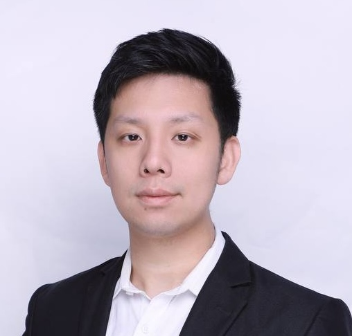

Harry Yang
I am an Assistant Professor at HKUST AMC and a visiting Professor at Yale University. My research is in Generative AI (GenAI), focusing on image and video generation. Previously, I worked at Meta as a Research Scientist. I am also the co-founder of Nesa. I received my PhD from USC and completed my undergraduate studies at USTC (SCGY). I am the recipient of USC distinguished alumni.
Google Scholar | X | Email | LinkedIn
News
• Dec 2024: Project Funded by TSSSU-O.
• November: Giving Talk in DevCon Bangkok.
• September: Visiting Abu Dhabi and Royal Family to discuss Collaboration.
• September: Giving talk in Singapore at Token2049.
• August 2024: Complete Security and Privacy for AI Inference in Decentralized Systems accepted at KDD 2024 Workshop. The paper describes a comprehensive framework for ensuring complete security and privacy in AI inference within decentralized systems, utilizing techniques such as zero-knowledge proofs, split learning, and trusted execution environments to protect data and model integrity across distributed nodes.
• August 2024: Hosting roundtable at Foresight 2024 in Hong Kong
• August 2024: Panel talk at ABS 2024 in Taipei
• August 2024: Visiting CUHKSZ
• May 2024: Foresight interview
• April 2024: Panel speaker at Harvard Blockchain Conference 2024
Team Members and Collaborators
- Qiang Sun (UToronto)
- Ser-Nam Lim (UCF, Meta)
- Xiaofeng Liu (Yale)
- Yue Zhao (USC) a
- Hongyang Zhang (UWaterloo)
- Xiaofan Liu (CityU)
- Yaoheng Yang (USC)
- Benyou Wang (CUHKSZ)
- Ailing Zeng (Tencent)
Current Students and Interns
- Zihao Wang
- Yexin Liu
- Xuran Ma
- Weixiao Wang
- Mingzhe Zheng
- Xianfeng Wu
- Wenjie Shu
- Haoze Zheng
- Tianzhi Li